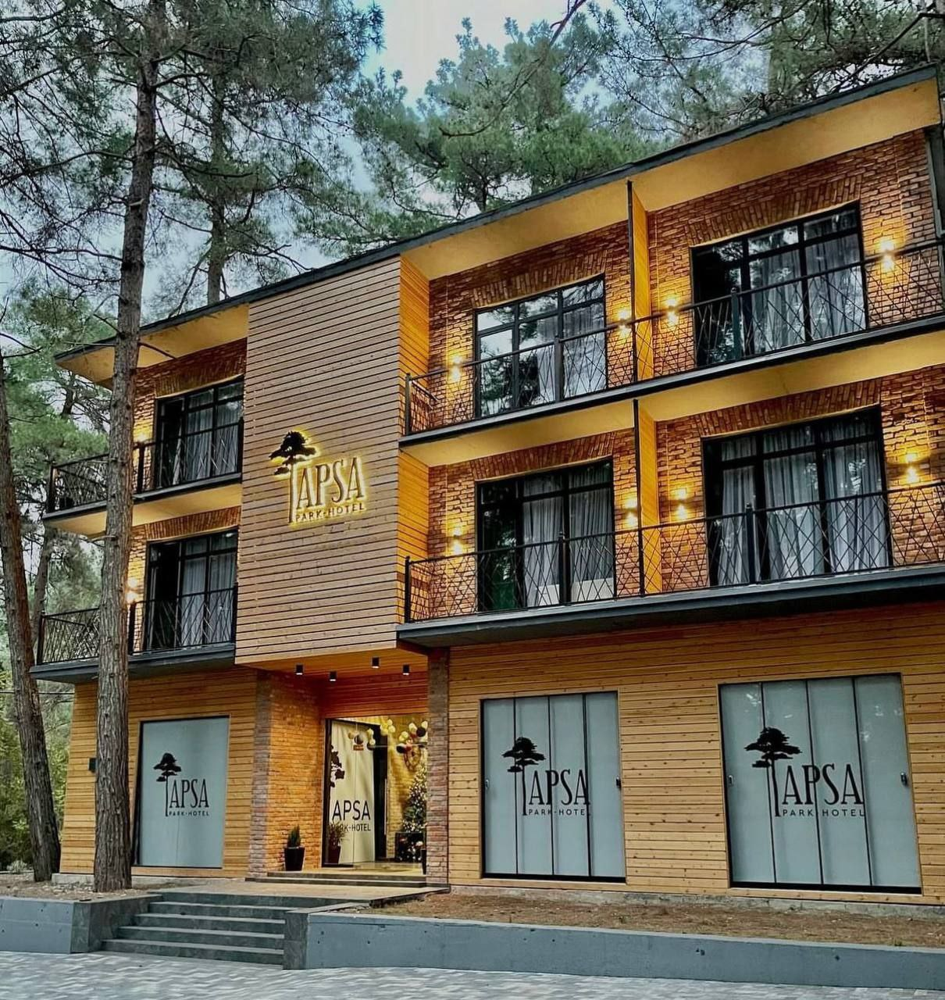
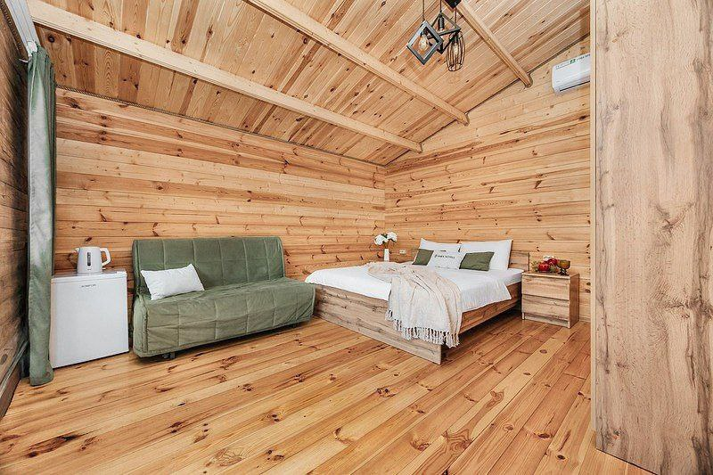
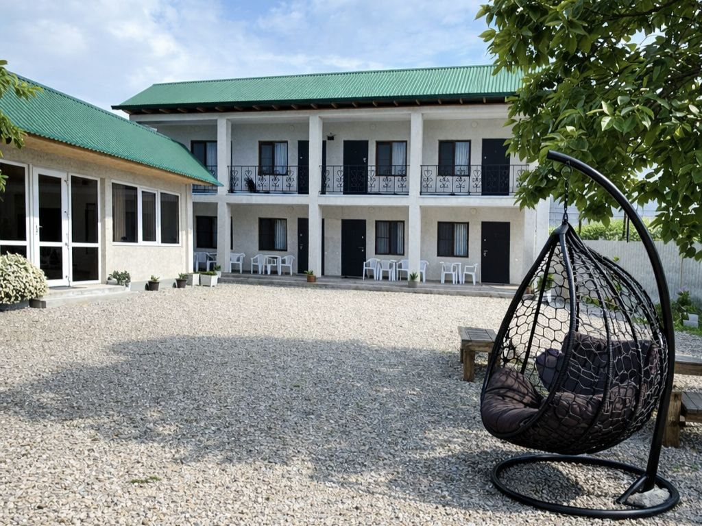
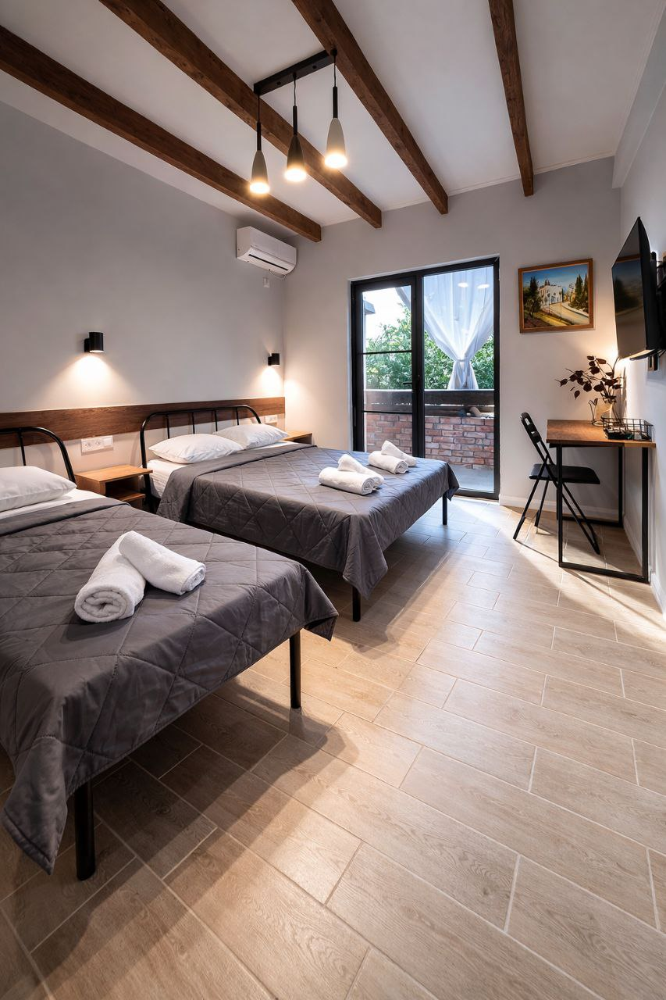
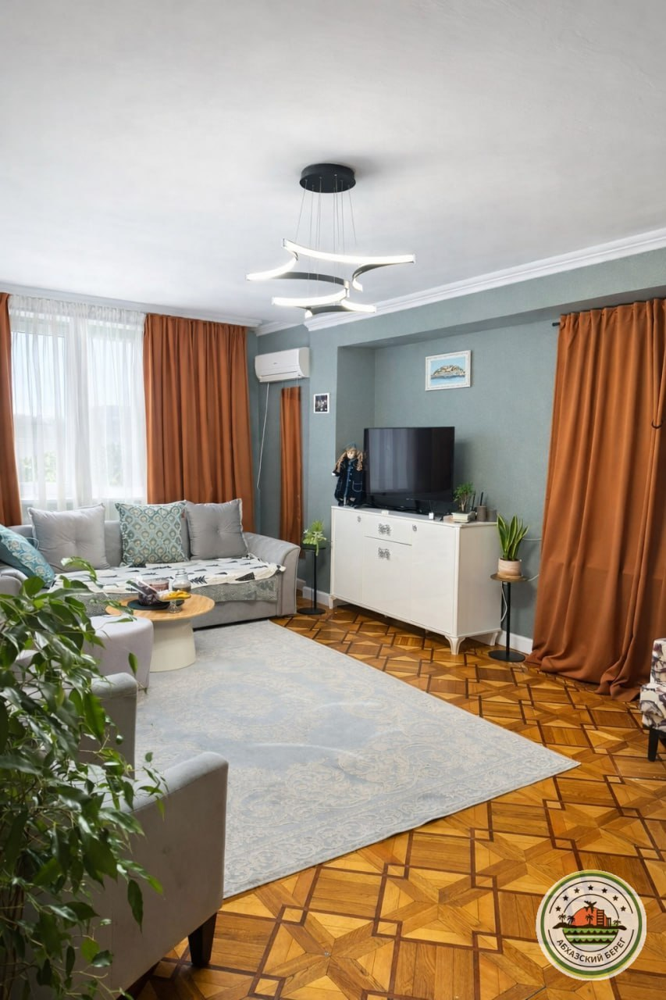

Варианты размещения в г. Пицунда

«АМЗАРА» отель с винодельней у заповедника
🏖️🌲 5 мин до пляжа (сосновый галечный)

«АПСА ПАРК-ОТЕЛЬ» в заповеднике
🏖️🌲 1 мин до пляжа (сосновый галечный)

«АРИНА» мини-отель
🏖️🌲 5 мин до пляжа (сосновый галечный)

«АССИР ПИЦУНДА» гостевой дом в центре
🏖️15 минут до пляжа (сосновый галечный)

«БЕЛАЯ ЛОШАДЬ» глэмпинг с бассейном
🏖️🌲 15 мин до пляжа (сосновый галечный)

«ГРАСС ОТЕЛЬ» коттеджи в горах Абхазии с бассейном
🏖️🌲 3 мин до пляжа (сосновый галечный)

«БОНЖУР» МИНИ-ОТЕЛЬ
🏖️🌲 2 мин до пляжа (сосновый галечный)

«ДАМИРА» отель в центре города
🏖️🌲 15 мин до пляжа (сосновый галечный)

«КАРАЛИНА» апартаменты
🏖️🌲 25мин до пляжа (сосновый галечный)

«ЛАЙМ» мини-отель с бассейном у заповедника
🏖️ 5 мин до пляжа (галечный сосновый)

«ЛК-ОТЕЛЬ» с бассейном
🏖️🌲 6 минут до пляжа, галечный сосновый

«МЕЛОДИ» эко-отель, деревянные домики
🏖️🌲5 минут пешком пляж галечный сосновый

«МИРА» домики и номера у озера
🏖️🌲 23 мин до пляжа (сосновый галечный)

«НИКОЛЬ» гостевой дом
🏖️4 минуты пешком до пляжа, галечный

«НОРА» гостевой дом эконом
🏖️ 🌲3 минуты до пляжа, галечный сосновый пляж

«САМШИТ» домики и номера у заповедника
🏖️🌲 2 мин до пляжа (сосновый галечный)

«САН ПИНО» домики деревянные с бассейном
🏖️🌲 5 мин до пляжа (сосновый галечный)

«САЯ» домики
🏖️🌲 20 мин до пляжа (сосновый галечный)

«СВЕТЛЫЙ ДВОРИК» гостевой дом эконом
🏖️🌲 3 мин до пляжа (сосновый галечный)

«СИМОНА» гостевой дом
🏖️🌲7 минут пешком до пляжа, галечный, сосновый

«ФАЗЕНДА» двухэтажные коттеджи с бассейном и питанием
🏖️🌲7 мин до пляжа (сосновый галечный)

«ФАЗЕНДА» отель с бассейном и питанием
🏖️🌲7 мин до пляжа (сосновый галечный)

«ЭКО ХАУС ПИТИУНТ» домики с бассейном
🏖️🌲7 мин до пляжа (сосновый галечный)

«АРГО» квартира 1-К
🏖️🌲 8 мин до пляжа (сосновый галечный)

«АТМОСФЕРНАЯ» квартира 2к
🏖️ 20 минут до пляжа, галечный

«ВИКТОРИЯ» квартира 2к
🏖️ 15 мин до пляжа (галечный)

«КАМИЛЛА» квартира 2к
🏖️🌲 5 мин до пляжа (сосновый галечный)

«МЕЛАНА» квартира 3к Дорогие гости, кто искал жильё на большую семью, этот вариант для вас ⭐
🏖️ 7 мин до пляжа (галечный)

«МОРЕОН» квартира
🏖️🌲3 мин до пляжа (галечный сосновый)

«НА ВЫСОТЕ» квартира 2к
🏖️ 15 мин до пляжа (галечный)

«ПИТИУНТ» квартира 4к
🏖️ пляж в 10 минут пешком, галечный

«СОЛНЕЧНАЯ» квартира 2к
🏖️🌲 10 мин до пляжа (сосновый галечный)